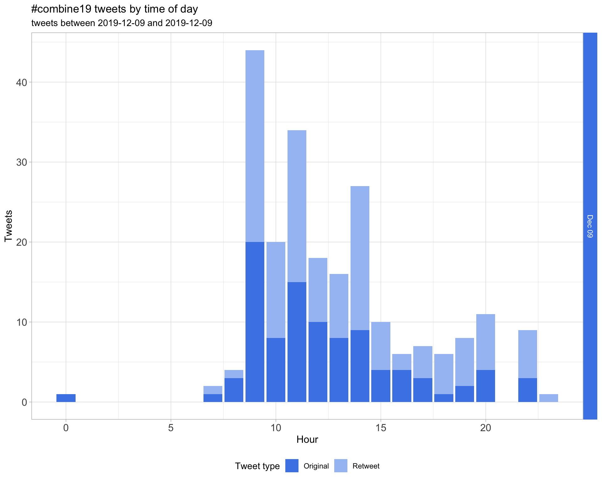

COMBINE19
COMBINE Symposium 2019
Last built: 2020-09-01 18:10:16
| Parameter | Value |
|---|---|
| hashtag | #combine19 |
| start_day | 2019-12-09 |
| end_day | 2019-12-09 |
| timezone | Australia/Sydney |
| theme | theme_light |
| accent | #4a86e8 |
| accent2 | #A4C2F3 |
| kcore | 2 |
| topics_k | 6 |
| bigram_filter | 3 |
| fixed | TRUE |
| seed | 1 |
Introduction
An analysis of tweets from the #combine19 hashtag for the COMBINE Symposium 2019.
A total of 251 tweets from 77 users were collected using the rtweet R package.
1 Timeline
1.1 Tweets by day

1.2 Tweets by day and time
Filtered for dates 2019-12-09 - 2019-12-09 in the Australia/Sydney timezone.

2 Users
2.1 Top tweeters
Overall
Original
Retweets

2.2 Retweet proportion
2.3 Top tweeters timeline

2.4 Top tweeters by day
Overall
Day 1

Original
Day 1

Retweets
Day 1
3 Sources
Users
Tweets

4 Networks
4.1 Replies
The “replies network”, composed from users who reply directly to one another, coloured by PageRank.

4.2 Mentions
The “mentions network”, where users mention other users in their tweets. Filtered for a k-core of 2. Node colour and size adjusted according to PageRank score.

5 Tweet types
5.1 Retweets
Proportion

Count

Top 10
| screen_name | text | retweet_count |
|---|---|---|
| AliciaOshlack | Today I’m following #combine19. If you are a computational biology or bioinformatics student you should get involved in this. I’ve had 3 Combine presidents in my group! | 9 |
| lazappi |
Congratulations to @Katarina_Stuart, @LinYingxin and the rest of the committee for putting together #combine19! üéâ If you want to be involved next year consider nominating to join the @combine_au committee https://t.co/Qtre7DF2k1. |
7 |
| combine_au | Our fabulous symposium organisers @Katarina_Stuart @LinYingxin kicking our day off! #combine19 https://t.co/ynboNgpTht | 5 |
| combine_au | @NhiHin use zebra fish to model familial Alzheimer’s disease and demonstrate the alteration in iron homeostasis by comparing differences in the transcriptome of iron response element gene sets. @combine_au #combine19 https://t.co/iy2OCf9ess | 5 |
| YiwenWang_Eva | Do you wanna to simulate more scenarios in gene family evolution? Then you cannot miss the talk of Qiuyi. He introduces a new model called IxDTL. Well done! Qiuyi! #COMBINE19 @QiuyiLi2 @MelbIntGen https://t.co/OK3AU73Z93 | 5 |
| JovMaksimovic | For everyone who will be attending the @abacbs post doc event at 6pm tonight in the beer garden at the Alfred Hotel (https://t.co/qzQ8iLSUtt) there will be a bar tab! Enjoy the üçª and say ‚ÄúHi!‚Äù to Ignatius Pang who has kindly stepped in to host in my stead #combine19 #ABACBSGIW19 | 4 |
| AusBiocommons | We’re so pleased to be sponsoring and attending the @combine_au Symposium in Sydney today! #COMBINE19 https://t.co/ydE8RUc2Yd | 4 |
| combine_au | Tingtimg Gong from @GarvanInstitute talks about challenges in calling somatic structural variants and demonstrates that more is better when it comes to using variant callers. #combine19 @combine_au https://t.co/8cUdGPeFqt | 4 |
| LinYingxin | Ready for the three-day bioinformatics and computational biology conference in Sydney? üë©‚Äçüíªüßë‚Äçüíª 14 hours left for COMBINE/AYRCOB student symposium 2019 registration open! üòé#ABACBSGIW19 #combine19 #abacbs @combine_au @abacbs https://t.co/AoJ8uvJwAK | 4 |
| shazanfar |
Congrats to the excellent organisers of #combine19 & all @combine_au members & exec for a fantastic year of “for students, by students” events. 2020 exec nominations are now open, I found it incredibly rewarding & highly recommend! #ABACBSGIW19 @abacbs https://t.co/REEA4BjOuU |
4 |
Most retweeted

5.2 Likes
Proportion
Count

Top 10
| screen_name | text | favorite_count |
|---|---|---|
| YiwenWang_Eva | Come to see me at Poster 49 to talk about multivariate methods dealing with batch effects in microbiome data #COMBINE19 https://t.co/c5Quo3dCOf | 38 |
| YiwenWang_Eva | Thanks for the chance to present my work #combine19 My poster is packed up and ready for ABACBS. üòâ#ABACBSGIW19 https://t.co/i3l4anaUXH | 30 |
| AliciaOshlack | Today I’m following #combine19. If you are a computational biology or bioinformatics student you should get involved in this. I’ve had 3 Combine presidents in my group! | 26 |
| gabefoley | Thanks @combine_au for second place in the poster presentations! If you’re interested in ancestral sequence reconstruction and missed me today - come check out my talk tomorrow morning at @abacbs in Session 3c Proteomics / Metabolomics #COMBINE19 #ABACBSGIW19 https://t.co/MypibiOo41 | 23 |
| LinYingxin | Finally the long COMBINE day finished! üéâEverything ran smoothly ‚ò∫Ô∏èSuper happy to organise this fantastic symposium with @Katarina_Stuart and the symposium committee team! You are so amazingüòâI would also like to thank all the presenters, judges, attendees and sponsors!#COMBINE19 https://t.co/xDdQyUPIP5 | 23 |
| askemdarling | First research poster presentation done ✅ #COMBINE19 https://t.co/JUo0bbZh4r | 22 |
| PatSullivann |
I really enjoyed presenting my poster on identifying splice-altering variants at #BioInfoSummer Next up: #COMBINE19 https://t.co/nVt1PoENZZ |
22 |
| combine_au | Congratulations to all the prize winners and thank you to all the judges for spending the day listening to all the talks and poster sessions! #combine19 https://t.co/QAskoXA58o | 19 |
| LinYingxin | Ready for the three-day bioinformatics and computational biology conference in Sydney? üë©‚Äçüíªüßë‚Äçüíª 14 hours left for COMBINE/AYRCOB student symposium 2019 registration open! üòé#ABACBSGIW19 #combine19 #abacbs @combine_au @abacbs https://t.co/AoJ8uvJwAK | 18 |
| LeganaFingerhut | Presenting my poster at #COMBINE19! Come talk to me about antimicrobial peptides, microbiomes, machine learning, genome-wide predictions, R, or R package development! @combine_au @abacbs spot 41! https://t.co/zx8ZKhAAAZ | 18 |
Most likes

5.3 Quotes
Proportion

Count

Top 10
| screen_name | text | quote_count |
|---|---|---|
| JovMaksimovic | The @abacbs postdoc survey is closing tomorrow at the end of the #ABACBSGIW19 conference. If you are a newbie postdoc (#combine19), a veteran postdoc or postdoc-identifying please complete the survey and let ABACBS know how they can best support and advocate for you. https://t.co/sIObXAFeEP | 1 |
| shazanfar |
Added, thanks Andrew!! #BioInfoSummer OR @bioinfosummer OR #biocasia OR #abacbs OR @abacbs OR #GIWABACBS2019 OR #abacbs2019 OR #abacbs19 OR #COMBINE19 OR @combine_au OR #COMBINE2019 https://t.co/GcPXYQY7ML |
1 |
| HaniKim127 | Excited because today I will present CiteFuse for the second time! But more excited by a tweet from @DaniKim_02 (yes our names rhyme) #combine19 @combine_au #twinsdoresearch #CPC https://t.co/sCVtJO8z3o | 1 |
| combine_au | Fantastic! This year COMBINE is trialling a live streaming of the symposium. We hope that everyone can attend and benefit from the presentations. #combine19 @combine_au #LiveStreaming https://t.co/BeDs6eQvRi | 1 |
| fredjaya1 | Very humbled and thrilled to be awarded the third best poster at #COMBINE19! Overall a fantastic day facilitated by an amazing and dedicated team @combine_au https://t.co/3SObVQ7jrE | 1 |
| tsonika | Tyrone and Javier would love to discuss their work with you. Go say hello! #ABACBSGIW19 #COMBINE19 https://t.co/f22R3xhWcK | 1 |
| tpq__ | Here is a longer form explanation of why you should do CPM(counts + 1) and not CPM(counts) + 1 #COMBINE19 #ABACBSGIW19 https://t.co/ykrK36Pslp | 1 |
Most quoted

6 Media
Proportion
Top 10
| screen_name | text | favorite_count |
|---|---|---|
| YiwenWang_Eva | Come to see me at Poster 49 to talk about multivariate methods dealing with batch effects in microbiome data #COMBINE19 https://t.co/c5Quo3dCOf | 38 |
| YiwenWang_Eva | Thanks for the chance to present my work #combine19 My poster is packed up and ready for ABACBS. üòâ#ABACBSGIW19 https://t.co/i3l4anaUXH | 30 |
| gabefoley | Thanks @combine_au for second place in the poster presentations! If you’re interested in ancestral sequence reconstruction and missed me today - come check out my talk tomorrow morning at @abacbs in Session 3c Proteomics / Metabolomics #COMBINE19 #ABACBSGIW19 https://t.co/MypibiOo41 | 23 |
| LinYingxin | Finally the long COMBINE day finished! üéâEverything ran smoothly ‚ò∫Ô∏èSuper happy to organise this fantastic symposium with @Katarina_Stuart and the symposium committee team! You are so amazingüòâI would also like to thank all the presenters, judges, attendees and sponsors!#COMBINE19 https://t.co/xDdQyUPIP5 | 23 |
| askemdarling | First research poster presentation done ✅ #COMBINE19 https://t.co/JUo0bbZh4r | 22 |
| PatSullivann |
I really enjoyed presenting my poster on identifying splice-altering variants at #BioInfoSummer Next up: #COMBINE19 https://t.co/nVt1PoENZZ |
22 |
| combine_au | Congratulations to all the prize winners and thank you to all the judges for spending the day listening to all the talks and poster sessions! #combine19 https://t.co/QAskoXA58o | 19 |
| LinYingxin | Ready for the three-day bioinformatics and computational biology conference in Sydney? üë©‚Äçüíªüßë‚Äçüíª 14 hours left for COMBINE/AYRCOB student symposium 2019 registration open! üòé#ABACBSGIW19 #combine19 #abacbs @combine_au @abacbs https://t.co/AoJ8uvJwAK | 18 |
| LeganaFingerhut | Presenting my poster at #COMBINE19! Come talk to me about antimicrobial peptides, microbiomes, machine learning, genome-wide predictions, R, or R package development! @combine_au @abacbs spot 41! https://t.co/zx8ZKhAAAZ | 18 |
| MarcelDinger | Thanks @combine_au for the hospitality and awesome jacaranda snow globe - love it :) #COMBINE19 https://t.co/l6J1W6UY1J | 17 |
6.1 Most liked image

7 Tweet text
7.1 Word cloud
The top 100 words used 3 or more times.
7.3 Emojis
7.4 Bigram graph
Words that were tweeted next to each other at least 3 times.

7.5 Topic modelling
Top 10 words associated with 6 topics identified by LDA.

7.5.1 Representative tweets
Most representative tweets for each topic
Topic 1
| screen_name | text | gamma |
|---|---|---|
| BradBalderson3 | log2(CPT+1) or log2(CPT(count+1)) for scRNA-seq, question by @tpq__ at #COMBINE19 to @rafalab. Tried both using data simulated with splatter. Problem with latter pseudocount is that value<1 results in log2(value)<0. Therefore 0!=0 across cells, so log2(CPT+1) wins. https://t.co/QJocuVyiMy | 0.9965241 |
| JovMaksimovic | The @abacbs postdoc survey is closing tomorrow at the end of the #ABACBSGIW19 conference. If you are a newbie postdoc (#combine19), a veteran postdoc or postdoc-identifying please complete the survey and let ABACBS know how they can best support and advocate for you. https://t.co/sIObXAFeEP | 0.9955073 |
| LeganaFingerhut | Presenting my poster at #COMBINE19! Come talk to me about antimicrobial peptides, microbiomes, machine learning, genome-wide predictions, R, or R package development! @combine_au @abacbs spot 41! https://t.co/zx8ZKhAAAZ | 0.9945509 |
| PNgsabrina | @fredjaya1 on using bioinformatics to study cryptic species of Australian toads üê∏ Cool infographics for a fast-forward talk at #COMBINE19 https://t.co/yEwwygvXrs | 0.9936496 |
| YiwenWang_Eva | Come to see me at Poster 49 to talk about multivariate methods dealing with batch effects in microbiome data #COMBINE19 https://t.co/c5Quo3dCOf | 0.9923912 |
| abacbs | Hani Jieun Kim presenting some work on the multi-modal analysis of CITE-seq data #combine19 | 0.9915543 |
| JasonJinxin | Want to know more B cell acute lymphoblastic leukemia? Come to see Feng @alexyfyf at #COMBINE19 #combine_au poster 47 https://t.co/HNI7j3juxe | 0.9905106 |
| PNgsabrina | Fast forward talk is up! And yes, I would love stability in my genes too üòÇ #COMBINE19 https://t.co/9n90q7hnCJ | 0.9891726 |
| MarcelDinger | Thanks @combine_au for the hospitality and awesome jacaranda snow globe - love it :) #COMBINE19 https://t.co/l6J1W6UY1J | 0.9891726 |
| wessidepraxis | Genome graph must be on the bioinformatics conference bingo card #combine19 | 0.9873953 |
| Katarina_Stuart | Excellent talk by Hani Kim on CiteFuse #COMBINE19 https://t.co/Ss10jZv91S | 0.9873953 |
Topic 2
| screen_name | text | gamma |
|---|---|---|
| combine_au | @NhiHin use zebra fish to model familial Alzheimer’s disease and demonstrate the alteration in iron homeostasis by comparing differences in the transcriptome of iron response element gene sets. @combine_au #combine19 https://t.co/iy2OCf9ess | 0.9959780 |
| LinYingxin | Ready for the three-day bioinformatics and computational biology conference in Sydney? üë©‚Äçüíªüßë‚Äçüíª 14 hours left for COMBINE/AYRCOB student symposium 2019 registration open! üòé#ABACBSGIW19 #combine19 #abacbs @combine_au @abacbs https://t.co/AoJ8uvJwAK | 0.9952281 |
| shazanfar | After an excellent set of student talks and posters at #combine19 we are now officially opening the #ABACBSGIW19 conference. Beginning with a Welcome to Country here on indigenous Cadigal land of the Eora country | 0.9949120 |
| abacbs | Up next is Maria Satti (National Institute of Genetics, Japan) talking about comparative genomics of Bifidobacterium from Egyptian fuit bats #combine19 | 0.9941347 |
| lazappi | Adding #eurobioc2019 to my Tweetdeck search with #BioInfoSummer OR @Bioinfosummer OR #biocasia OR #abacbs OR @abacbs OR #GIWABACBS2019 OR #abacbs2019 OR #abacbs19 OR #COMBINE19 OR @combine_au OR #COMBINE2019 for 24 #bioinformatics conference action. | 0.9936496 |
| shazanfar | And we’re well into the morning session of the #combine19 student symposium, a key part of @abacbs #ABACBSGIW19 Excellent presentations (both talks and posters) by students/ECRs today! | 0.9936496 |
| em6wong | Looking forward to #combine19 student/ECR symposium and having a chat about science careers this afternoon at the careers panel! #ABACBSGIW19 | 0.9930771 |
| SeqComplete | #bioinformatics #bioit @PNgsabrina: ‘Stunning slides by @NhiHin from the @UofABioinfoHub on understanding Alzheimer’s disease via #bioinformatics at @combine_au #COMBINE19’ https://t.co/6IZctcnDLS, see more https://t.co/X2bD5F4Rqm | 0.9930771 |
| abacbs | Rachael Bowen-James starting the mid-morning session by talking about Cancer Genomics compression #combine19 | 0.9930771 |
| abacbs | Ahmed Zeeshan Siddiqui (UNSW) is now talking about tissue-specific cirRNAs in normal healthy humans. #combine19 | 0.9930771 |
Topic 3
| screen_name | text | gamma |
|---|---|---|
| LonsBio | Great start to #combine19 with @rfroum characterising whether CRISPR-Cas is active in resistance Klebsiella pneumoniae. No time for questions, but we have Twitter! Any known limitations in the CRISPRCasFinder (e.g. FPs or FNs) when locating the cassettes? | 0.9959780 |
| shazanfar |
Congrats to the excellent organisers of #combine19 & all @combine_au members & exec for a fantastic year of “for students, by students” events. 2020 exec nominations are now open, I found it incredibly rewarding & highly recommend! #ABACBSGIW19 @abacbs https://t.co/REEA4BjOuU |
0.9955073 |
| LonsBio | #COMBINE19 awards for posters, lightning talks and talks! Nice having the judges presenting the prizes. Unable to split a few of the winners, multiple prizes! #ABACBSGIW19 | 0.9945509 |
| shazanfar | Congratulations to the excellent presenters (talk, lightning talk and poster) today at #combine19 !! It was a pleasure to hear all the fantastic science, but incredibly difficult to judge! | 0.9945509 |
| fredjaya1 | Who else is excited for a massive week of bioinformatics? The first of presentation I‚Äôll be giving will be a fast forward talk on frogs at #COMBINE19, come and check it out! üê∏üߨ #ABACBSGIW19 https://t.co/Y6xjqNKPxY | 0.9941347 |
| askemdarling | Awesome to hear @rfroum talk about her Masters research project on CRISPR-CAS activity in Kp #COMBINE19 https://t.co/4eg6TDoXOi | 0.9936496 |
| combine_au | Tingtimg Gong from @GarvanInstitute talks about challenges in calling somatic structural variants and demonstrates that more is better when it comes to using variant callers. #combine19 @combine_au https://t.co/8cUdGPeFqt | 0.9936496 |
| combine_au | The first speaker of #combine19, @rfroum gives us insight into the diversity of CRISPR activity in Klebsiella pneumoniae genome. Thank you for the talk! https://t.co/lUSd7BCJ7s | 0.9930771 |
| abacbs | Ilariya Tarasova (WEHII) is up next presenting the exploration of time and division-dependent gene expression during B cell division #combine19 | 0.9930771 |
| abacbs | Next up is Tingting Gong (Garvan) talking about somatic structural variant detection and annotation in cancer samples #combine19 | 0.9930771 |
| combine_au | Congratulations to all the prize winners and thank you to all the judges for spending the day listening to all the talks and poster sessions! #combine19 https://t.co/QAskoXA58o | 0.9930771 |
Topic 4
| screen_name | text | gamma |
|---|---|---|
| JovMaksimovic | For everyone who will be attending the @abacbs post doc event at 6pm tonight in the beer garden at the Alfred Hotel (https://t.co/qzQ8iLSUtt) there will be a bar tab! Enjoy the üçª and say ‚ÄúHi!‚Äù to Ignatius Pang who has kindly stepped in to host in my stead #combine19 #ABACBSGIW19 | 0.9963593 |
| LinYingxin | Finally the long COMBINE day finished! üéâEverything ran smoothly ‚ò∫Ô∏èSuper happy to organise this fantastic symposium with @Katarina_Stuart and the symposium committee team! You are so amazingüòâI would also like to thank all the presenters, judges, attendees and sponsors!#COMBINE19 https://t.co/xDdQyUPIP5 | 0.9961781 |
| PNgsabrina | An adaptation from the #betterposter concept, I will be presenting my poster at #COMBINE19 on my recently published work as a co-first author. Using tRNA-seq, RNA-seq, Proteomics data - a case study on how modification changes can affect protein translation. @combine_au @abacbs https://t.co/BRE69dSa5m | 0.9959780 |
| rnomics | https://t.co/3pvgrx66XZ PNgsabrina: ’An adaptation from the #betterposter concept, I will be presenting my poster at #COMBINE19 on my recently published work as a co-first author. Using tRNA-seq, RNA-seq, Proteomics data - a case study on how modification changes can affect pro… | 0.9957556 |
| LonsBio | @combine_au This is arguably the 10th @combine_au symposium - the existence of the second is hotly debated amongst COMBINE historians, but a truce has been declared by accepting there could be an off by one error! From humble beginnings… #combine19 https://t.co/4prr6tKHZ7 | 0.9949120 |
| abacbs | Alassandra Whaite from the University of the Sunshine Coast presenting proteomic work on natural protein fibers from molluscs and spiders. Facinating area of study! #combine19 | 0.9941347 |
| Katarina_Stuart | Alessandra Whaite wow-ing us all with her spider and oyster wrangling skills #COMBINE19 https://t.co/Pe2imcZhfZ | 0.9915543 |
| IgnatiusPang | GIW/ABACBS Conference dinner still open until end of tonight. Please speak to registrations desk if you want to get a ticket. #ABACBSGIW19 #COMBINE19 | 0.9915543 |
| combine_au | Next up is @gerrythill talking about limitations of current pangenomic analytical tools! What goes in must come out! #combine19 https://t.co/bDfyJlfIzj | 0.9905106 |
| AusBiocommons | We’re so pleased to be sponsoring and attending the @combine_au Symposium in Sydney today! #COMBINE19 https://t.co/ydE8RUc2Yd | 0.9891726 |
Topic 5
| screen_name | text | gamma |
|---|---|---|
| combine_au | Machine learning on breast cancer genomic data. Richard Lupat demonstrates the use of deep learning based models to classify breast cabcer cell types. @combine_au #combine19 @PeterMacCC https://t.co/52GQDuq5Hg | 0.9961781 |
| LonsBio | Great talk by Richard Lupat from @PeterMacRes on using autoencoders to find relevant features for further model building to classify breast cancers from high dimensional genomic data #combine19 | 0.9949120 |
| abacbs | Richard Lupat (Peter MacCullum Cancer Centre) talking about Deep Learning for feature etraction in Breast Cancer data #combine19 | 0.9945509 |
| combine_au | Fantastic! This year COMBINE is trialling a live streaming of the symposium. We hope that everyone can attend and benefit from the presentations. #combine19 @combine_au #LiveStreaming https://t.co/BeDs6eQvRi | 0.9936496 |
| abacbs | We also had a very cool talk from Marina Reixachs (ANU) on ribosomal profiling on isoforms. Always hard being the first talk after lunch #combine19 #sofull | 0.9936496 |
| shazanfar |
Although the #combine19 program is not yet over! See the program for the remaining events for today: careers panel & social event Students at #ABACBSGIW19 take note! |
0.9936496 |
| LonsBio | That’s two #COMBINE19 talks so far today mentioning autoencoders, will have to pick the brains of @rlupat and @pabloacera91 at lunch time - seems a very useful technique for biological applications | 0.9936496 |
| HaniKim127 | Excited because today I will present CiteFuse for the second time! But more excited by a tweet from @DaniKim_02 (yes our names rhyme) #combine19 @combine_au #twinsdoresearch #CPC https://t.co/sCVtJO8z3o | 0.9930771 |
| samleechch | Very good representation of what autoencoders want to do from PAO’s talk on deep learning over @nanopore signal data #combine19 https://t.co/N41mYIrP5F | 0.9923912 |
| PNgsabrina | Interesting deep clustering #MachineLearning approach by Pablos to detect modifications on nanopore reads #COMBINE19 https://t.co/t2XwRnHNwY | 0.9923912 |
Topic 6
| screen_name | text | gamma |
|---|---|---|
| dumeir | Started #COMBINE19 with an excellent presentation by my friend @rfroum and ended with an insightful career panel by @rafalab, @MarcelDinger, Dr Denis Bauer and Dr Emily Wong. Thank you @combine_au for allowing me to be an abstract reviewer and see you tomorrow for #ABACBSGIW19! | 0.9961781 |
| YiwenWang_Eva | Do you wanna to simulate more scenarios in gene family evolution? Then you cannot miss the talk of Qiuyi. He introduces a new model called IxDTL. Well done! Qiuyi! #COMBINE19 @QiuyiLi2 @MelbIntGen https://t.co/OK3AU73Z93 | 0.9955073 |
| gabefoley | Thanks @combine_au for second place in the poster presentations! If you’re interested in ancestral sequence reconstruction and missed me today - come check out my talk tomorrow morning at @abacbs in Session 3c Proteomics / Metabolomics #COMBINE19 #ABACBSGIW19 https://t.co/MypibiOo41 | 0.9952281 |
| abacbs | Quiyi Li (UniMelbourne) talking about “IxDTL a flexible model of gene family evolution”. Love the beamer slides #latex #respect #combine19 | 0.9949120 |
| abacbs | Gerry Tonkin-Hill from the Sanger Centre (UK) presenting a cautionary tale of errors and contamination in bacterial Pangenome analyses #combine19 | 0.9941347 |
| SameOld_SamOld | Presenting my poster at #combine19 today! Come see me to hear about doing a deep dive on bulk RNA-Seq to characterise rare cells using my Shiny app ☺️ https://t.co/dMVmSudbjD | 0.9941347 |
| LinYingxin | COMBINE/AYRCOB symposium career panel starts now ü§© panelists include @rafalab @MarcelDinger @allPowerde @em6wong #COMBINE19 https://t.co/NHfgwQet5o | 0.9930771 |
| abacbs | Xiangnan Xu (USyd) rounding off the session with his talk on Nutrigenomics data analysis #combine19 | 0.9915543 |
| Katarina_Stuart | Xiqngnan Xu closing off the COMBINE 2019 student talks with his presentation on nutrigenomics #COMBINE19 https://t.co/PyRnHu0vF3 | 0.9915543 |
| combine_au | Thank you @marinareixachs from the ANU and Ahmad Siddiqui from @UNSW for opening the third and last session of the COMBINE symposium. #combine19 https://t.co/lh7UIBxEBo | 0.9905106 |
| AZadoorian22 | Thanks @rafalab, @MarcelDinger, @allPowerde and @em6wong for all your excellent advice at the #combine19 @CPC_EMCR career panel tonight! https://t.co/PCgAcJ4tyW | 0.9905106 |
8 Links
Links to GitHub, GitLab, BitBucket, Bioconductor or CRAN mentioned in Tweets.
Session info
## ─ Session info ───────────────────────────────────────────────────────────────
## setting value
## version R version 4.0.0 (2020-04-24)
## os macOS Catalina 10.15.6
## system x86_64, darwin17.0
## ui X11
## language (EN)
## collate en_US.UTF-8
## ctype en_US.UTF-8
## tz Europe/Berlin
## date 2020-09-01
##
## ─ Packages ───────────────────────────────────────────────────────────────────
## package * version date lib source
## askpass 1.1 2019-01-13 [1] CRAN (R 4.0.0)
## assertthat 0.2.1 2019-03-21 [1] CRAN (R 4.0.0)
## backports 1.1.8 2020-06-17 [1] CRAN (R 4.0.0)
## bitops 1.0-6 2013-08-17 [1] CRAN (R 4.0.0)
## callr 3.4.3 2020-03-28 [1] CRAN (R 4.0.0)
## clamour * 0.1.0 2020-09-01 [1] Github (lazappi/clamour@c8ea1c7)
## cli 2.0.2 2020-02-28 [1] CRAN (R 4.0.0)
## colorspace 1.4-1 2019-03-18 [1] CRAN (R 4.0.0)
## crayon 1.3.4 2017-09-16 [1] CRAN (R 4.0.0)
## curl 4.3 2019-12-02 [1] CRAN (R 4.0.0)
## digest 0.6.25 2020-02-23 [1] CRAN (R 4.0.0)
## dplyr * 1.0.1 2020-07-31 [1] CRAN (R 4.0.2)
## ellipsis 0.3.1 2020-05-15 [1] CRAN (R 4.0.0)
## emo * 0.0.0.9000 2020-08-17 [1] Github (hadley/emo@3f03b11)
## evaluate 0.14 2019-05-28 [1] CRAN (R 4.0.0)
## fansi 0.4.1 2020-01-08 [1] CRAN (R 4.0.0)
## farver 2.0.3 2020-01-16 [1] CRAN (R 4.0.0)
## forcats * 0.5.0 2020-03-01 [1] CRAN (R 4.0.0)
## fs * 1.5.0 2020-07-31 [1] CRAN (R 4.0.2)
## generics 0.0.2 2018-11-29 [1] CRAN (R 4.0.0)
## ggforce 0.3.2 2020-06-23 [1] CRAN (R 4.0.2)
## ggplot2 * 3.3.2 2020-06-19 [1] CRAN (R 4.0.2)
## ggraph * 2.0.3 2020-05-20 [1] CRAN (R 4.0.0)
## ggrepel * 0.8.2 2020-03-08 [1] CRAN (R 4.0.0)
## ggtext * 0.1.0 2020-06-04 [1] CRAN (R 4.0.2)
## glue 1.4.1 2020-05-13 [1] CRAN (R 4.0.0)
## graphlayouts 0.7.0 2020-04-25 [1] CRAN (R 4.0.0)
## gridExtra 2.3 2017-09-09 [1] CRAN (R 4.0.0)
## gridtext 0.1.1 2020-02-24 [1] CRAN (R 4.0.2)
## gtable 0.3.0 2019-03-25 [1] CRAN (R 4.0.0)
## here * 0.1 2017-05-28 [1] CRAN (R 4.0.0)
## highr 0.8 2019-03-20 [1] CRAN (R 4.0.0)
## htmltools 0.5.0 2020-06-16 [1] CRAN (R 4.0.0)
## httr 1.4.2 2020-07-20 [1] CRAN (R 4.0.2)
## igraph * 1.2.5 2020-03-19 [1] CRAN (R 4.0.0)
## janeaustenr 0.1.5 2017-06-10 [1] CRAN (R 4.0.0)
## jsonlite 1.7.0 2020-06-25 [1] CRAN (R 4.0.0)
## kableExtra * 1.2.1 2020-08-27 [1] CRAN (R 4.0.2)
## knitr * 1.29 2020-06-23 [1] CRAN (R 4.0.0)
## labeling 0.3 2014-08-23 [1] CRAN (R 4.0.0)
## lattice 0.20-41 2020-04-02 [1] CRAN (R 4.0.0)
## lifecycle 0.2.0 2020-03-06 [1] CRAN (R 4.0.0)
## lubridate * 1.7.9 2020-06-08 [1] CRAN (R 4.0.0)
## magick * 2.4.0 2020-06-23 [1] CRAN (R 4.0.0)
## magrittr 1.5 2014-11-22 [1] CRAN (R 4.0.0)
## markdown 1.1 2019-08-07 [1] CRAN (R 4.0.0)
## MASS 7.3-51.6 2020-04-26 [1] CRAN (R 4.0.0)
## Matrix 1.2-18 2019-11-27 [1] CRAN (R 4.0.0)
## modeltools 0.2-23 2020-03-05 [1] CRAN (R 4.0.0)
## munsell 0.5.0 2018-06-12 [1] CRAN (R 4.0.0)
## NLP 0.2-0 2018-10-18 [1] CRAN (R 4.0.0)
## openssl 1.4.2 2020-06-27 [1] CRAN (R 4.0.0)
## pillar 1.4.6 2020-07-10 [1] CRAN (R 4.0.2)
## pkgconfig 2.0.3 2019-09-22 [1] CRAN (R 4.0.0)
## plyr 1.8.6 2020-03-03 [1] CRAN (R 4.0.0)
## png 0.1-7 2013-12-03 [1] CRAN (R 4.0.0)
## polyclip 1.10-0 2019-03-14 [1] CRAN (R 4.0.0)
## processx 3.4.3 2020-07-05 [1] CRAN (R 4.0.2)
## ps 1.3.3 2020-05-08 [1] CRAN (R 4.0.0)
## purrr * 0.3.4 2020-04-17 [1] CRAN (R 4.0.0)
## R6 2.4.1 2019-11-12 [1] CRAN (R 4.0.0)
## RColorBrewer * 1.1-2 2014-12-07 [1] CRAN (R 4.0.0)
## Rcpp 1.0.5 2020-07-06 [1] CRAN (R 4.0.0)
## RCurl 1.98-1.2 2020-04-18 [1] CRAN (R 4.0.0)
## reshape2 1.4.4 2020-04-09 [1] CRAN (R 4.0.0)
## rlang 0.4.7 2020-07-09 [1] CRAN (R 4.0.2)
## rmarkdown 2.3 2020-06-18 [1] CRAN (R 4.0.0)
## rprojroot 1.3-2 2018-01-03 [1] CRAN (R 4.0.0)
## rstudioapi 0.11 2020-02-07 [1] CRAN (R 4.0.0)
## rtweet * 0.7.0 2020-01-08 [1] CRAN (R 4.0.0)
## rvest * 0.3.6 2020-07-25 [1] CRAN (R 4.0.2)
## scales 1.1.1 2020-05-11 [1] CRAN (R 4.0.0)
## selectr 0.4-2 2019-11-20 [1] CRAN (R 4.0.0)
## sessioninfo 1.1.1 2018-11-05 [1] CRAN (R 4.0.0)
## slam 0.1-47 2019-12-21 [1] CRAN (R 4.0.0)
## SnowballC 0.7.0 2020-04-01 [1] CRAN (R 4.0.0)
## stringi 1.4.6 2020-02-17 [1] CRAN (R 4.0.0)
## stringr * 1.4.0 2019-02-10 [1] CRAN (R 4.0.0)
## tibble 3.0.3 2020-07-10 [1] CRAN (R 4.0.2)
## tidygraph 1.2.0 2020-05-12 [1] CRAN (R 4.0.0)
## tidyr * 1.1.1 2020-07-31 [1] CRAN (R 4.0.2)
## tidyselect 1.1.0 2020-05-11 [1] CRAN (R 4.0.0)
## tidytext * 0.2.5 2020-07-11 [1] CRAN (R 4.0.2)
## tm 0.7-7 2019-12-12 [1] CRAN (R 4.0.0)
## tokenizers 0.2.1 2018-03-29 [1] CRAN (R 4.0.0)
## topicmodels * 0.2-11 2020-04-19 [1] CRAN (R 4.0.0)
## tweenr 1.0.1 2018-12-14 [1] CRAN (R 4.0.0)
## usethis 1.6.1 2020-04-29 [1] CRAN (R 4.0.0)
## utf8 1.1.4 2018-05-24 [1] CRAN (R 4.0.0)
## vctrs 0.3.2 2020-07-15 [1] CRAN (R 4.0.2)
## viridis * 0.5.1 2018-03-29 [1] CRAN (R 4.0.0)
## viridisLite * 0.3.0 2018-02-01 [1] CRAN (R 4.0.0)
## webshot * 0.5.2 2019-11-22 [1] CRAN (R 4.0.0)
## withr 2.2.0 2020-04-20 [1] CRAN (R 4.0.0)
## wordcloud * 2.6 2018-08-24 [1] CRAN (R 4.0.0)
## xfun 0.16 2020-07-24 [1] CRAN (R 4.0.2)
## xml2 * 1.3.2 2020-04-23 [1] CRAN (R 4.0.0)
## yaml 2.2.1 2020-02-01 [1] CRAN (R 4.0.0)
##
## [1] /Library/Frameworks/R.framework/Versions/4.0/Resources/library